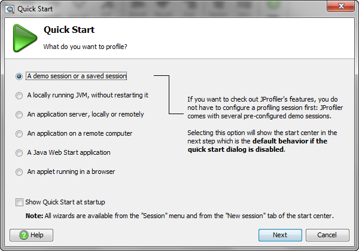

By default, the quickstart dialog is shown when JProfiler is started. It contains a number of
shortcuts that help to to get started with profiling your application. The manual configuration dialog
as well as all integration wizards are also available on the "New session" tab of the
start center. Once you're familiar with JProfiler
you can turn off the quickstart dialog by deselecting the check box
show quickstart at startup
at the bottom.

You can access the quickstart dialog at at any later time by pressing SHIFT-F1 or by
choosing Help->Show quickstart dialog from JProfiler's main menu.